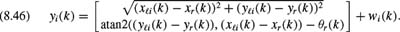
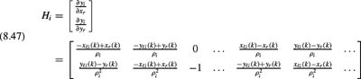
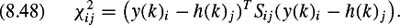

|
| |||||||||||||
|
|
||
In this section we introduce the use of the Kalman filter to solve the problem SLAM which has been an active topic of research in recent years (see, e.g., [99, 128,321,390]). We begin with a very simple case where the robot is able to measure the relative displacement between itself and a number of fixed landmarks. The simple example also assumes that each sensor reading is automatically associated with the correct landmark so that the robot does not have to determine which landmark corresponds to any given measurement. After using this simple example to demonstrate the basic concept of Kalman filter-based SLAM, we present a more realistic example where the robot measures range and bearing to fixed landmarks and the data association problem is not automatically solved.
One common approach to solving the SLAM problem is to use a Kalman filter to simultaneously estimate the position of a moving vehicle along with the positions of landmarks seen by the vehicle. This technique was originally suggested by Smith, Self, and Cheeseman [390]. Here we present the most basic example of this technique: we assume an omnidirectional motion model for the vehicle and we assume that the vehicle has sensors capable of uniquely identifying each landmark and providing a measurement of the relative displacement between the vehicle and the landmark. We assume that the vehicle's sensor can see every landmark at every instant of time.
We first define the state to be the location of the vehicle (xr, yr) together with the locations of each of the landmarks, (xℓi, yℓi), i = 1, 2,...,nℓ, where nℓ is the total number of landmarks. In other words,

We assume that the control inputs are ux and uy, the vehicle velocities in the x- and y-directions, respectively. We model the errors associated with this motion with the random vector vr(k) = [vrx(k), vry(k)]T, which is zero-mean white Gaussian noise with covariance matrix Vr(k). The landmarks do not move, so the resulting dynamic equations for the system are
This equation can clearly be written in the form
where v(k) is a zero-mean white Gaussian noise with covariance matrix
The measurement to the ith landmark is the position of the landmark relative to the vehicle plus some noise, i.e.,
where wi(k) is an independently distributed Gaussian random vector with covariance matrix Wi(k). Note the yi(k) is a linear function of the system state x(k). Specifically, we can write
where
The first row of H has a −1in the first column that to corresponds xr and a 1 in the (2i + 1)th column that corresponds to xℓi, and zeros everywhere else. Similarly, the second row is all zeros except for a −1in the second column and a 1 in the (2i + 2)th column.
With this notation, we can stack all of the measurements together to create one big measurement vector y = [y1, y2,...,ynℓ]T which gives the measurement equation
where
and the covariance matrix associated with w(k) is
where Wi(k) is the covariance matrix associated with wi(k). The problem has now been put into a form suitable for the Kalman filtering equations in section 8.2.5. Kalman estimates of the system state x provide estimates of both vehicle and landmark locations, hence solving the SLAM problem.
Now we consider the SLAM problem for a mobile robot whose inputs are forward velocity and angular velocity and whose measurements are range and bearing readings. In a sense, we are combining the range-bearing localization approach from section 8.3.1 with the SLAM approach described above in section 8.4.1. The difference is that the number of columns in the H matrix is the same as the number of rows in the state vector. Moreover, the H matrix now contains partial derivatives of the measurement equations with respect to the state.
The measurement equations are the same as in the range and bearing localization example, i.e.,
| (8.46) | 
|
The first three columns of the H matrix will be fairly dense since the planar location of the robot is part of both measurement equations. The columns to the right will be sparse as in the last example of EKF SLAM since the measurement of each landmark is only a function of the robot position and that landmark's position.
| (8.47) | 
|
where ρi is the range of the landmark as given in the measurement equation. Now, we substitute the modified H matrix into the previously defined framework for Kalman filter SLAM.
Again, we have the problem of data association, i.e., we must determine which landmark corresponds to each measurement. We also have to determine when a new landmark has been encountered. Once again, we use the Mahalanobis distance metric to compare the ith measurement with the measurement prediction for the jth landmark, i.e.,
| (8.48) | 
|
Once the χij has been calculated for each combination of landmarks and measurements, the minimum is checked against an acceptance threshold to assure that the match is likely enough. If the minimum χ is above a high threshold, then the measurement is not likely to have come from any existing landmark. Therefore, we have an indication that a new landmark should be initialized and added to the map.
|
|
||
|